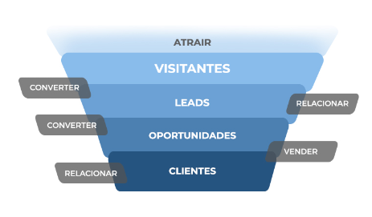

Pipeline de vendas
Guia gratuito
para construir o seu

para construir o seu
Uma boa e constante gestão dessa dinâmica de vendas é
o segredo da eficiência e da garantia de bons negócios,
focando em negociações
quentes e sem desperdício de
oportunidades e bons leads.
É por meio do pipeline de vendas e monitoramento,
acompanhamento e otimização de atividades diárias
com as negociações que o seu
vendedor consegue
ser mais eficiente.
A jornada do cliente é pautada no funil de vendas, que por padrão é:
O topo do funil é a etapa APRENDIZADO E DESCOBERTA. Significa que o
potencial comprador ainda está
descobrindo que tem um problema a ser
solucionado.
O meio do funil é a etapa RECONHECIMENTO DO PROBLEMA.
Significa que o potencial comprador reconhece
que tem um problema e
considera uma solução.
O fundo do funil é a etapa DECISÃO DE COMPRA. Significa que o
potencial usuário está no estado de fechar
negócio.
Você pode adaptar a jornada do cliente de acordo com as necessidades
da sua empresa, fazendo o seu próprio
funil de vendas com as etapas que achar necessárias.
É hora de organizar tudo para por em prática as
etapas da jornada. Crie tarefas para cada uma delas,
liste todos
os passos que um lead deverá passar até a venda efetiva.
Um exemplo
de sequência de etapas de vendas para criar tarefas pode ser:
A partir destas definições, organize o é necessário fazer em cada
uma destas etapas,
como organização de prioridades, envio de email,
ligação, proposta, etc.
Temos um material muito interessante focado em mercado imobiliário,
mas que você pode adaptar ao seu
produto ou serviço.
Vale muito a leitura e leva apenas 10 minutos!
Assim que o lead entra no pipeline, é importante atendê-lo o mais rápido possível para
que não esfrie o
interesse no seu produto ou serviço.
Nesta etapa é importante
contar com um CRM. O CRM é um software de Gestão de Relacionamento com o
Cliente,
ou seja, é nele que ficam documentados todos os passos que o potencial cliente dá no
atendimento.
Isso gera um histórico de processo de atendimento para sua empresa e
é a partir deste histórico que é possível
calcular o tempo médio de passagem do lead
de uma etapa para outra. Com este tempo médio, é hora de
definir qual seria o tempo
ideal de todo o ciclo e tempo máximo para cada etapa.
Esta definição serve também para
que os leads parados não atrapalhem o pipeline: depois que ultrapassarem
estes limites,
devem ser retirados do fluxo de vendas.
Os vendedores podem ter autonomia para adaptar
essas regras, pois o pipeline é um guia, não um padrão
rigoroso a ser seguido.
Esperamos que você tenha aproveitado o conteúdo. Se puder, nos
envie
um feedback em nossos canais de relacionamento.
A Solare é uma empresa de marketing digital, aceleradora de
negócios,
com foco em desempenho e resultados. Somos
especialistas em mercado imobiliário e geração
de leads, além de
experientes em todo o processo de vendas de empreendimentos e
imóveis.
Quer bater um papo para mostramos como podemos acelerar suas vendas?
Entre em contato!
www.solareinterativa.com.br
contato@solareinterativa.com.br
+55 11 98321-0928
.png)
.png)